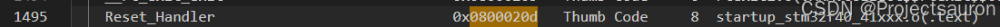

STM32 芯片启动过程
@toc
一、前言
下面主要讲解从上电复位到 main 函数的过程。主要有以下步骤：
- 初始化堆栈指针：
SP = __initial_sp、PC = Reset_Handler - 初始化中断向量表
- 配置系统时钟
- 调用 C 库函数
_main初始化用户堆栈，然后进入main函数
二、STM32 的启动模式
启动模式决定了中断向量表的位置，STM32 有三种启动模式：
- 主闪存存储器启动：从 STM32 内置的 Flash 启动（$0x0800 0000-0x0807 FFFF$），一般我们使用 JTAG 或者 SWD 模式下载程序时，就是下载到这个里面，重启后也直接从这启动程序。以
0x08000000对应的内存为例，则该块内存既可以通过0x00000000操作也可以通过0x08000000操作，且都是操作的同一块内存。 - 系统存储器启动：从系统存储器启动（$0x1FFFF000-0x1FFF F7FF$），这种模式启动的程序功能是由厂家设置的。一般来说，我们选用这种启动模式时，是为了从串口下载程序，因为在厂家提供的 ISP 程序中，提供了串口下载程序的固件，可以通过这个 ISP 程序将用户程序下载到系统的 Flash 中。以
0x1FFFFFF0对应的内存为例，则该块内存既可以通过0x00000000操作也可以通过0x1FFFFFF0操作，且都是操作的同一块内存。 - 片上 SRAM 启动：从内置 SRAM 启动（$0x2000 0000-0x3FFFFFFF$），既然是 SRAM，自然也就没有程序存储的能力了，这个模式一般用于程序调试。SRAM 只能通过
0x20000000进行操作，与上述两者不同。从 SRAM 启动时，需要在应用程序初始化代码中重新设置向量表的位置。
我们可以选择设置 BOOT0 和 BOOT1 的引脚电平状态，来选择复位后的启动模式，如下表：
| BOOT1 | BOOT0 | 自举模式 | 自举空间 |
|---|---|---|---|
| x | 0 | 主 Flash | 选择主 Flash 作为自举空间 |
| 0 | 1 | 系统存储器 | 选择系统存储器作为自举空间 |
| 1 | 1 | 嵌入式 SRAM | 选择嵌入式 SRAM 作为自举空间 |
==启动模式只决定程序烧录的位置==，加载完程序之后会有一个重映射（映射到 0x00000000 地址位置）；真正产生复位信号的时候，CPU 还是从开始位置执行
值得注意的是 STM32 上电复位以后，代码区都是从 0x00000000 开始的，三种启动模式只是将各自存储空间的地址映射到 0x00000000 中。
三、STM32 启动文件分析
下面针对 startup_stm32f40_41xxx.s 文件进行简单的分析。
1、栈 Stack
1 | |
这段代码的含义如下：开辟栈的大小为 0X00000400（1KB），名字为 STACK， NOINIT 即不初始化，可读可写， ALIGN=3 表示 8（2^3）字节对齐。
栈的作用是用于局部变量，函数调用，函数形参等的开销，栈的大小不能超过内部 SRAM 的大小。如果编写的程序比较大，定义的局部变量很多，那么就需要修改栈的大小。
EQU：宏定义的伪指令，相当于等于，类似于 C 中的 define。AREA：告诉汇编器汇编一个新的代码段或者数据段。STACK 表示段名，这个可以任意命名；NOINIT 表示不初始化；READWRITE 表示可读可写，ALIGN=3，表示按照 $2^3$ 对齐，即 8 字节对齐。SPACE：用于分配一定大小的内存空间，单位为字节。这里指定大小等于 Stack_Size。- 标号
__initial_sp紧挨着 SPACE 语句放置，表示栈的结束地址，即栈顶地址，栈是由高向低生长的。
2、堆 Heap
1 | |
解释如下：开辟堆的大小为 0X00000200（512 字节），名字为 HEAP， NOINIT 即不初始化，可读可写，ALIGN=3 同理表示 8（2^3）字节对齐。__heap_base 表示堆的起始地址，__heap_limit 表示堆的结束地址。堆是由低向高生长的，跟栈的生长方向相反。
PRESERVE8：指定当前文件的堆栈按照 8 字节对齐。THUMB：表示后面指令兼容THUMB指令。THUBM是ARM指令集的一个子集重新编码二形成的一个指令集，其指令长度为 16bit，现在 Cortex-M 系列的都使用THUMB-2指令集，THUMB-2是 32 位的，兼容 16 位和 32 位的指令，是THUMB的超集。
堆主要用来动态内存的分配，像 malloc() 函数申请的内存就在堆上面。不过这个在 STM32 里面用的比较少。
3、中断向量表 Vectors
1 | |
这里定义一个数据段，名字为 RESET，可读。并声明 __Vectors、__Vectors_End 和 __Vectors_Size 这三个标号具有全局属性，可供外部的文件（C 文件等）调用。
EXPORT：声明一个标号可被外部的文件使用，使标号具有全局属性。如果是IAR编译器，则使用的是GLOBAL这个指令。
当内核响应了一个发生的异常后，对应的异常服务例程（ESR）就会执行。为了决定 ESR 的入口地址， 内核使用了向量表查表机制。这里使用一张向量表。向量表其实是一个 WORD（32 位整数）数组，每个下标对应一种异常，该下标元素的值则是该 ESR 的入口地址。向量表在地址空间中的位置是可以设置的，通过 NVIC 中的一个重定位寄存器来指出向量表的地址。在复位后，该寄存器的值为 0。因此，在地址 0 （即 FLASH 地址 0） 处必须包含一张向量表，用于初始时的异常分配。要注意的是这里有个另类：0 号类型并不是什么入口地址，而是给出了复位后 MSP 的初值。下图是 F407 的向量表的一部分，具体参阅想要使用的芯片对应的手册即可。

可以看到和代码中的定义是一一对应的：
1 | |
向量表从 FLASH 的 0 地址开始放置，以 4 个字节为一个单位，地址 0 存放的是栈顶地址， 0X04 存放的是复位程序的地址，以此类推。从代码上看，向量表中存放的都是中断服务函数的函数名，可我们知道 C 语言中的函数名就是一个地址。
DCD：分配一个或者多个以字为单位的内存，以四字节对齐，并要求初始化这些内存。在向量表中，DCD分配了一堆内存，并且以ESR的入口地址初始化它们。
3.1 中断响应流程
这里既然提到了中断向量表，就额外补充以下中断响应流程：
- 中断信号发送到 NVIC
- NVIC 通知 CPU
- CPU 根据中断号得到中断服务程序地址（基地址 + 中断编号 * 4B）
- 保存现场
- 执行中断服务程序
- 恢复现场
- 继续执行程序
下面以 PendSV_Handler 为例，说明一下：
可以看到 PendSV_Handler 的中断号是 14，也就是 $14*4=(56)_{10}=(38)_2$。
而中断向量表的基地址为 0x08000000，故其服务函数的地址在 0x08000038，见下 bin 文件（下面会提到）：

解析出来是：0x080002D7，而 map 文件中却是：0x080002D6

原因如下：ARM 指令集有 ARM 指令集和 Thumb 指令集。ARM 指令集位数长；而 Thumb 指令集位数短，故而占用内存比较小，所以编译器大部分时间采用 Thumb 指令集。
- Thumb 指令集末尾是奇数位 1，像这里的
0x080002D7 - ARM 指令集末尾是偶数位 0，也就是这里的
0x080002D6
而我们访问 0x080002D7 这个地址的时候，它实际上会跳转到 0x080002D6 这个地址。
4、复位程序 Reset_Handler
1 | |
首先定义一个名称为 .text 的代码段，仅可读。
复位子程序是系统上电后第一个执行的程序，调用 SystemInit 函数初始化系统时钟，然后调用 C 库函数 __main，最终调用 main 函数去到 C 程序中。
WEAK：表示弱定义，如果外部文件优先定义了该标号则首先引用该标号，如果外部文件没有声明也不会出错。这里表示复位子程序可以由用户在其他文件重新实现，这里并不是唯一的。IMPORT：表示该标号来自外部文件，跟 C 语言中的EXTERN关键字类似。这里表示SystemInit和__main这两个函数均来自外部的文件。LDR：从存储器中加载字到一个寄存器中BL：跳转到由寄存器/标号给出的地址，并把跳转前的下一条指针地址保存到LRBLX：跳转到由寄存器给出的地址，并根据寄存器的LSE确定处理器的状态，还要把跳转前的下条指令地址保存到LRBX：跳转到由寄存器/标号给出的地址，不用返回
SystemInit() 是一个标准的库函数，在 system_stm32f4xx.c 这个库文件中定义。主要作用是配置系统时钟。__main 是一个标准的 C 库函数，主要作用是初始化用户堆栈，并在函数的最后调用 main 函数去到 C 程序中。这就是为什么我们写的程序都有一个 main 函数的原因。
5、中断服务函数
在启动文件里面已经帮我们写好所有中断的中断服务函数，跟我们平时写的中断服务函数不一样的就是这些函数都是空的，真正的中断服务程序需要我们在外部的 C 文件里面重新实现，这里只是提前占了一个位置而已。
如果我们在使用某个外设的时候，开启了某个中断，但是又忘记编写配套的中断服务程序或者函数名写错，那当中断来临的时，程序就会跳转到启动文件预先写好的空的中断服务程序中，并且在这个空函数中无线循环，即程序就死在这里。
1 | |
在 stm32f4xx_it.c 文件中对这几个中断服务函数做了重定向定义：
当我们在这里定义的话，汇编里的实现就不起作用了。
下面是一些外设相关的中断服务程序：
1 | |
B：跳转到一个标号。这里跳转到一个‘.’，即表示无线循环
当我们使能了 USART1 中断，而没有在 C 程序中实现 USART1_IRQHandler，那就会在启动文件的汇编程序中进行死循环，而死循环就是通过这个 B . 来实现的。
6、用户堆栈初始化
1 | |
ALIGN：对指令或者数据存放的地址进行对齐，后面会跟一个立即数。缺省表示 4 字节对齐。IF,ELSE,ENDIF：汇编的条件分支语句，跟 C 语言的 if ,else 类似END：文件结束
首先判断是否定义了 __MICROLIB：
- 如果定义了这个宏则赋予标号
__initial_sp（栈顶地址）、__heap_base（堆起始地址）、__heap_limit（堆结束地址）全局属性，可供外部文件调用。有关这个宏我们在 KEIL 里面配置，具体见下图。然后堆栈的初始化就由 C 库函数__main来完成。 - 如果没有定义
__MICROLIB，则才用双段存储器模式，且声明标号__user_initial_stackheap具有全局属性，让用户自己来初始化堆栈。
这里的
__user_initial_stackheap就是前面提到的__main函数中的一个标签，也就相当于一个函数，初始化了堆栈的大小
Use MicroLIB有什么好处呢？当我们的程序使用到了一些 C 库的一些文件的时候，比如printf等，可以减小生成的代码。但是，它的执行速度没有标准 C 库的速度快。也就是用时间换空间，使用的时候自行取舍是否使用微库（Use MicroLIB）。
四、STM32 启动流程分析
经过刚才对启动文件的分析，下面对 STM32 启动流程的分析就要清晰不少了。
1、初始化 SP、PC 及中断向量表
当系统复位后，处理器首先读取向量表中的前两个字(8 个字节)，第一个字存入 SP，第二个字存入 PC，也就是
程序执行的起始地址。
下面打开经过编译生成的 bin 文件，看到前 8 个字节的内容如下（小端模式）：

Keil 默认生成 hex 文件，要想生成 bin 文件要自己添加命令，设置如下：
D:\Keil_v5\ARM\ARMCC\bin\fromelf.exe --bin --output=Objects/stm32f407.bin Objects/stm32f407.axf
即 0x20000660 和 0x0800020D，下面在 map 文件（存放链接地址）中查找这两个地址存放的是什么数据：

这正是中断向量表的前两项内容，这也印证了前面所说的内容：

2、设置系统时钟
接下来执行 PC 指向的 Reset_Handler，并调用 SystemInit 初始化系统时钟。
1 | |
时钟部分可以参考：STM32 时钟树（基于 STM32F407）
前面的部分是配置时钟的，具体参考手册即可。需要注意的是最后一段代码：
默认是没有开启 VECT_TAB_SRAM（即从 SRAM 中启动），表示从 FLASH 中启动，VTOR 寄存器存放的是中断向量表的起始地址，在 IAP 升级会修改这里的偏移量。
3、初始化堆栈并进入 main
执行完 SystemInit 后又调用了标准库中的 __main 函数：
在这里会初始化堆、栈、RO、RW、ZI 段。最后就进入到 C 文件中的 main 函数中。
有关内存分段的内存可以参考：单片机内存区域划分
五、总结

至此，启动过程圆满结束！